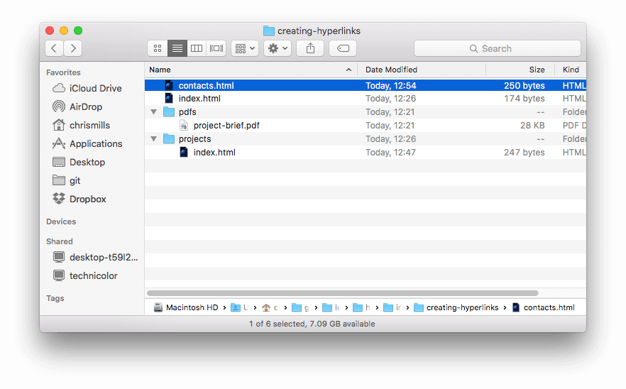

建立超链接（Creating hyperlinks）
任务目标：
- 学习如何有效地实现一个超链接（hyperlink），把多个文件链接在一起。
什么是超链接?
超链接使互联网成为一个互联的网络，能将文档链接到任何其他文档（或其他资源），也能链接到文档的指定部分，还可以在一个简单的网址上提供应用程序。
点击（或激活）超链接将使浏览器跳转到另一个网址（URL）（URL也可用于文件传输协议（FTP） ，电子邮件传输协议（SMTP）和其他应用）
链接的解析
<a>（anchor）元素
一个基本链接使用<a>元素包裹文本，href属性包含链接文件（网址）来创建。target属性（前提是有href属性）：链接页面在浏览器窗口中的打开方式，target="_blank"在新的标签页打开链接。
href（hypertext reference）超文本引用：互联网或计算机上一个资源的别称。可以是一个Web页面，也可以是PDF文档。
链接文本样式默认为蓝色，点击后会变成紫色！
<p>I'm creating a link to
</p>
使用title属性补充信息
title属性补充关于链接的有用信息
<p>I'm creating a link to
title="The best place to find more information about Mozilla's
mission and how to contribute">the Mozilla homepage</a>.
</p>

块级链接
可以将一些内容转换为链接，甚至是 块级元素。将一个图像转换为链接，只需把图像放到<a></a>标签中间。
<img src="mozilla-image.png" alt="mozilla logo that links to the mozilla homepage">
</a>
问题：a 标签为什么能够包含块级元素？
这个和 CSS 没关系。而且按新的 HTML 规范，已经不按 inline 和 block 来区分元素类型了。
Categories 是该元素本身的分类，content model 规定了合法的元素的内容（子元素、文本等）类型。
a 元素的 content model 为 transparent。
按照HTML5新规范，大意就是这类元素本身内部可以有任何类型的内容，是否合法要看其父元素的 content model 和其内容的 categories。
比如我们要看 p > ins > a > div 是否合法。
p 元素的 content model 是 phrasing content，ins 元素的 content model 是 transparent，a 元素的 content model 也是 transparent。
故此时里面包含 div 的合法性向上传递，变成检查 p > div；
div 不属于 phrasing content，所以这个嵌套是不合法的。
phrase(短语)
ins(insert 插入文本)
(译者注: 在HTML5以前，a标签属于行内元素，而div、h1、p 等为块级元素，如果强行包裹，可能会被强行截断为多个a标签。当然，都是浏览器的事啦。)
明确地来说，input是属于inline-block（CSS2.1 新增的值）元素，但inline-block 的概念最早是由替换元素演化而来的，
替换元素就是浏览器根据元素的标签和属性，来决定元素的具体显示内容。替换元素本身没有内容，是“空元素”。
例如浏览器会根据<img>标签的src属性的值来读取图片信息并显示出来；又例如根据<input>标签的type属性来决定是显示输入框，还是单选按钮等。
inline-block：可以设置宽高，也可以同行。
统一资源定位器(URL)与路径(path)
文件夹（目录），文件取名不要有空格！
邻居的小伙伴叫相对路径 邻居-小伙伴 相对=相关=隔壁
其他城市的小伙伴叫绝对路径 城市-楼-家-小伙伴
../表示源文件（所在页面的文件夹）的上一级文件夹,以此类推 。".."也叫父文件夹，最远只能向上走到根目录。
绝对路径是完整的路径，以/开头。
相对路径以源文件为参考点；参考点就像地图的起点，目标文件就像地图的终点。
向下：


向上：



绝对URL： 如果index.html 页面上传到projects这一个目录 。projects位于web服务站点的根目录, web站点的域名为http://www.example.com, http://www.example.com/projects/index.html 或者仅仅通过http://www.example.com/projects/来访问。
基础URL：针对同一个网站来讲，其相同的url部分,如：http://www.163.com
绝对URL就是你的网站主页上的文件或目录在硬盘上真正的路径
如：https://www.example.com:80/path/to/myfile.html?key1=value1&key2=value2#anchor
相对URL：去除基础的部分，剩余的url就是相对URL，如：/image.html，完整显示为http://www.163.com/image.html
相对 URL 如果以斜杠（/）开头，就表示网站的根目录。
否则，必须以当前目录为起点，推算资源的位置。
比如，相对 URL /foo/bar.html表示网站根目录的子目录foo，foo/bar.html表示在当前目录的foo子目录。
URL 还可以使用两个特殊简写，表示特定位置：
.：表示当前目录，比如./a.html（当前目录下的a.html文件）
..：表示上级目录，比如../a.html（上级目录下的a.html文件）
相对URL:如果projects的index.html转到根目录(最高级)，那么 pdfs/project-brief.pdf 的相对URL将会指向http://www.example.com/pdfs/project-brief.pdf。
指向上级目录： 如果想在projects/index.html中包含一个指向pdfs/project-brief.pdf的超链接，你必须返回上级目录，然后再回到pdf目录。“返回上一个目录级”使用两个英文点号表示 — .. — 所以使用的相对路径是 ../pdfs/project-brief.pdf
区别：绝对URL和相对URL包括协议和域名，绝对路径和相对路径不包含！！！
文档片段
超链接链接到HTML 文档的特定部分（文档片段）
分配id给HTML文档片段：
<h2 id="Mailing_address">Mailing address</h2>
在不同HTML文档中链接HTML文档片段：
<p>Want to write us a letter? Use our <a href="contacts.html#Mailing_address">mailing address</a>.</p>
在相同HTML文档中链接文档片段：
<p>The <a href="#Mailing_address">company mailing address</a> can be found at the bottom of this page.</p>
注意：
●尽可能使用相对URL：1、代码短，容易阅读。2、绝对URL（需要使用DNS查询域名，多一步）增加浏览器工作量！
●不要把URL作为链接文本，链接文本要描述出作用：“Download Firefox”（好文本）和“Click here”（坏文本）！
●不要把“link”或“links to”作为链接文本！
●不要一个链接里嵌套多个链接（为了屏幕阅读器用户）
●URL尽可能短（为了屏幕阅读器用户）
链接到非html资源 ——留下清晰的提示
链接到一个下载的资源（如PDF或Word文档）或流媒体（如视频或音频）或有一个意想不到的效果（打开一个弹出窗口，或加载Flash电影）应该添加清晰的提示以免令人反感：
Download the sales report (PDF, 10MB)
</a></p>
Watch the video (stream opens in separate tab, HD quality)
</a></p>
Play the car game (requires Flash)
</a></p>
在下载链接时使用下载属性：
使用下载（download）属性来提供一个默认的保存文件名
download="firefox-latest-64bit-installer.exe">
Download Latest Firefox for Windows (64-bit) (English, US)
</a>
电子邮件链接

打开一个超链接发送电子邮件，使用<a>元素和href属性，mailto: 收件人地址（nowhere@mozilla.org）

收件人地址是可选的，href只是"mailto:"，发送电子邮件的窗口也会打开，只是没有收件人的地址。（通常用于“分享”链接，用户选择发送的地址）
mailto后面同时有多个参数的话，第一个参数必须以“?”开头，后面的参数每一个都以“&”分隔。
<a href="mailto:nowhere@mozilla.org?cc=name2@rapidtables.com&bcc=name3@rapidtables.com&subject=The%20subject%20of%20the%20email &body=The%20body%20of%20the%20email">
Send mail with cc, bcc, subject and body
</a>
& 代表和号“&”。 %20代表空格这样浏览器就可以正确地显示文本了。
每个字段的值必须是URL编码的。 也就是说，不能有非打印字符（不可见字符比如制表符、换行符、分页符）和空格，这是标准的URL查询标记方法。
课外扩展：
抄送的英文缩写为cc，来源于Carbon Copy，在使用手动机械打字机时代，采用复写纸，同样一份文件可以一次打印出两份乃至多份，分送给不同的人。到了互联网时代，如果一份邮件需要发送给多个人阅读，只要在“抄送”或“CC”一栏填上相关人员的信箱地址即可。如果是抄送多人，只要将他们的地址用逗号隔开，即可发送到相应的信箱。

密送的英文缩写为bcc，来源于Blind Carbon Copy,由于某种原因或出于某种考虑，你不希望收信人知道你把这封邮件还发送给了另外的人，则可将这位幕后的人的信箱地址放在密送一栏。“密送”的收件人不会被其他收件人看到。
可以真的要到了工作岗位之后才真正能，了解他的用处。比如说某部门A给下属部门a b c发通知的时候，就可以给与自己同级的B C都部门抄送一份，为了让其他部门了解自己部门的安排，这是经常有的事情。
举个栗子：写一封邮件，收件人为y@163.com，抄送给a@163.com，b@163.com两个抄送对象，密送给m@163.com，那么这封邮件可以被y@163.com，a@163.com，b@163.com同时看到三个收件人和副本，而看不到密送人m@163.com。
html target属性详解（如何分窗口，frame、target、base、hr）:https://blog.csdn.net/coslay/article/details/40275337